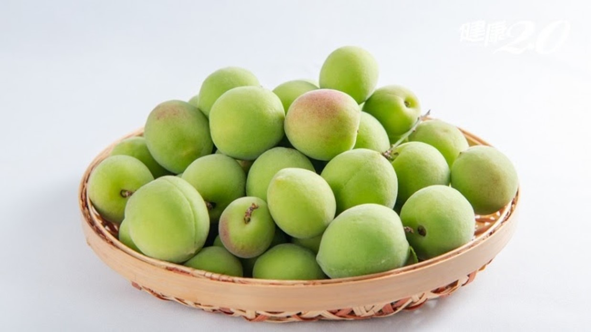
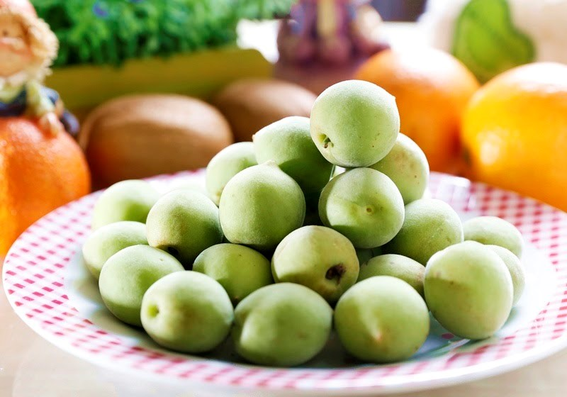

中部
|  |  |
熱量:20/顆
水果介紹：
落葉性小喬木，生長勢強，樹冠開張，海拔300至1000公尺均能種植，花期為12月下旬至1月上旬，花為白色、果實心形，果皮紅色、皮光滑具短茸毛，平均果重10.5公克，酸度極高，不適宜當鮮果，適宜作加工用。
營養成分：
蛋白質、脂肪、醣類、維生素Ｃ、磷、鈣、鐵、檸檬酸、蘋果酸、琥珀酸、果酸
如何挑選：
挑果實完整飽滿，表面沒有瘀傷或病斑，而且，果實愈大的品質愈好，尤其是果肉豐厚而種子小
果園介紹 :